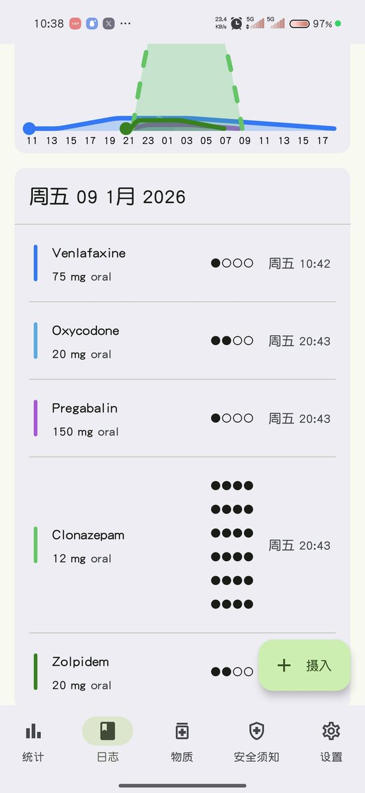
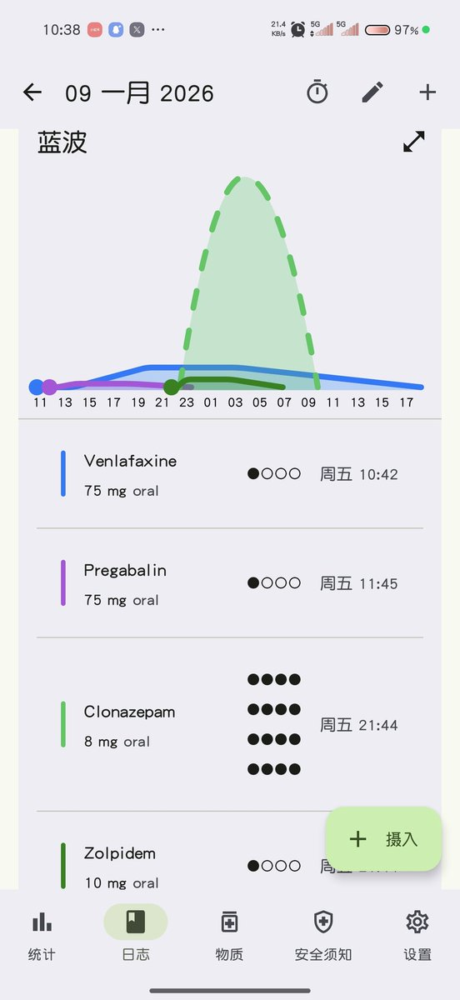

冰棍好烫喵 🍥🧊🍔🍟🍜🍣🍙🍧🍮🍩☕️💊🤤
@bghtnya
@SalviaSWC 话说这篇以及后续的记录能放进free od wiki嘛 多少也有点关系
补两张图窝和蓝波的9号的药效


冰棍好烫喵 🍥🧊🍔🍟🍜🍣🍙🍧🍮🍩☕️💊🤤
@bghtnya
来了，为了让大家更好了解幺幺幺事件（一月十一号晚晶哥暴力执法冰棍正当防卫一事），决定公开几篇记录，留存好历史，先写9号的
2026.01.09[星期五] 冰棍期末考试最后一天
早八： 只需要考计算机c语言基础 太简单根本不需要复习 上午考试全秒了 https://t.co/MTv7jsEw0b https://t.co/zlCh8yRkUh